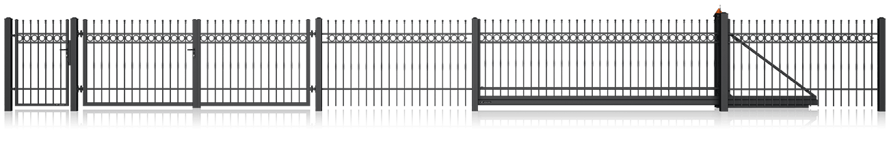
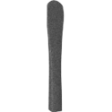

Składa się z 4 nowoczesnych wzorów ogrodzeń o poziomym układzie wypełnienia.
Ogrodzenia z kolekcji HOME INCLUSIVE wykonane są z kształtowników zamkniętych, lub blachy pełnej, zależnie od wzoru.
Ogrodzenia HOME INCLUSIVE marki Wiśniowski charakteryzują się zabezpieczeniem antykorozyjnym: ocynk ogniowy + RAL Standard
dostępne wzory ogrodzeń HOME INCLUSIVE
AW.10.200
Wypełnienie: panel 500mm
AW.10.200
Wypełnienie: panel 250mm
Podział liczby pól dla bramy przesuwnej
Dla wzoru AW.10.200
1 dla bram do < 2750 mm2 dla bram do > 2750 mm i < 5500 mm3 dla bram do > 5500 mm
dostępne aplikacje ozdobne
Dla wzoru AW.10.200
Typ AP-1Typ AP-2Typ AP-3Typ AP-4Typ AP-5Typ AP-6
AW.10.228
Wypełnienie: blacha pełna w wersji z prześwitem
AW.10.228
Wypełnienie: blacha pełna w wersji bez prześwitu
AW.10.229
Wypełnienie: blacha pełna ułożona na kształt żaluzji
AW.10.230
Wypełnienie: blacha pełna z prześwitem
kolekcja modern
Składa się z 15 nowoczesnych wzorów ogrodzeń.
Ogrodzenia z kolekcji MODERN wykonane są z kształtowników zamkniętych, oraz blach perforowanych i pełnych, zależnie od wzoru.
Ogrodzenia MODERN marki Wiśniowski charakteryzują się zabezpieczeniem antykorozyjnym: ocynk ogniowy + RAL Standard
Składa się z 18 klasycznych wzorów ogrodzeń.
Ogrodzenia z kolekcji LUX wykonane są ze stalowych prętów o przekroju 14x14 mm.
Ogrodzenia LUX marki Wiśniowski charakteryzują się zabezpieczeniem antykorozyjnym: ocynk ogniowy + RAL Standard
dostępne wzory ogrodzeń LUX
AW.10.31
Wypełnienie: stalowe pręty o przekroju 14 x 14 mm
Dostępne opcje wykonania: zakończenie górnej krawędzi: proste, łukiem wypukłym; dostępne w wersji przekoszonej
AW.10.33
Wypełnienie: stalowe pręty o przekroju 14 x 14 mm
Dostępne opcje wykonania: zakończenie górnej krawędzi: proste, łukiem wklęsłym, łukiem wypukłym; dostępne w wersji przekoszonej; balustrada
AW.10.34
Wypełnienie: stalowe pręty o przekroju 14 x 14 mm
Dostępne opcje wykonania: zakończenie górnej krawędzi: proste, łukiem wklęsłym, łukiem wypukłym; dostępne w wersji przekoszonej; balustrada
AW.10.39
Wypełnienie: stalowe pręty o przekroju 14 x 14 mm
Dostępne opcje wykonania: zakończenie górnej krawędzi: proste, łukiem wypukłym; dostępne w wersji przekoszonej; balustrada
AW.10.45
Wypełnienie: stalowe pręty o przekroju 14 x 14 mm
Dostępne opcje wykonania: zakończenie górnej krawędzi: proste, łukiem wklęsłym, łukiem wypukłym; dostępne w wersji przekoszonej; balustrada
AW.10.46
Wypełnienie: stalowe pręty o przekroju 14 x 14 mm
Dostępne opcje wykonania: zakończenie górnej krawędzi: proste, łukiem wklęsłym, łukiem wypukłym; dostępne w wersji przekoszonej; balustrada
AW.10.48
Wypełnienie: stalowe pręty o przekroju 14 x 14 mm
Dostępne opcje wykonania: zakończenie górnej krawędzi: proste, łukiem wypukłym; dostępne w wersji przekoszonej; balustrada
AW.10.51
Wypełnienie: stalowe pręty o przekroju 14 x 14 mm
Dostępne opcje wykonania: zakończenie górnej krawędzi: proste; balustrada
AW.10.52
Wypełnienie: stalowe pręty o przekroju 14 x 14 mm
Dostępne opcje wykonania: zakończenie górnej krawędzi: proste; balustrada
AW.10.53
Wypełnienie: stalowe pręty o przekroju 14 x 14 mm
Dostępne opcje wykonania: zakończenie górnej krawędzi: proste; balustrada
AW.10.54
Wypełnienie: stalowe pręty o przekroju 14 x 14 mm
Dostępne opcje wykonania: zakończenie górnej krawędzi: proste; dostępne w wersji przekoszonej
AW.10.56
Wypełnienie: stalowe pręty o przekroju 14 x 14 mm
Dostępne opcje wykonania: zakończenie górnej krawędzi: proste, łukiem wypukłym; dostępne w wersji przekoszonej; balustrada
AW.10.57
Wypełnienie: stalowe pręty o przekroju 14 x 14 mm
Dostępne opcje wykonania: zakończenie górnej krawędzi: proste, łukiem wypukłym; dostępne w wersji przekoszonej; balustrada
AW.10.58
Wypełnienie: stalowe pręty o przekroju 14 x 14 mm
Dostępne opcje wykonania: zakończenie górnej krawędzi: proste, łukiem wypukłym; dostępne w wersji przekoszonej; balustrada
AW.10.59
Wypełnienie: stalowe pręty o przekroju 14 x 14 mm
Dostępne opcje wykonania: zakończenie górnej krawędzi: proste, łukiem wypukłym; dostępne w wersji przekoszonej; balustrada
AW.10.60
Wypełnienie: stalowe pręty o przekroju 14 x 14 mm
Dostępne opcje wykonania: zakończenie górnej krawędzi: proste; dostępne w wersji przekoszonej; balustrada
AW.10.61
Wypełnienie: stalowe pręty o przekroju 14 x 14 mm
Dostępne opcje wykonania: zakończenie górnej krawędzi: proste, łukiem wypukłym

AW.10.62
Wypełnienie: stalowe pręty o przekroju 14 x 14 mm
Dostępne opcje wykonania: zakończenie górnej krawędzi: proste, łukiem wypukłym; dostępne w wersji przekoszonej; balustrada
rodzaje grotów
Groty typu SP
Grot - AGrot - EGrot - KGrot - OGrot - W
Groty typu TOP

Grot - TOP 3Grot - TOP 4Grot - TOP 5
kolekcja premium
Składa się z 7 klasycznych wzorów ogrodzeń.
Ogrodzenia z kolekcji PREMIUM wykonane są ze stalowych kształtowników zamkniętych o przekroju 20x20 mm.
Ogrodzenia PREMIUM marki Wiśniowski charakteryzują się zabezpieczeniem antykorozyjnym: ocynk ogniowy + RAL Standard
dostępne wzory ogrodzeń PREMIUM
AW.10.63
Wypełnienie: stalowe kształtowniki zamknięte zakończonymi elementami ozdobnymi w górnej linii wypełnienia, 20x20 mm
Dostępne opcje wykonania: zakończenie górnej krawędzi: proste, łukiem wklęsłym, łukiem wypukłym
AW.10.64
Wypełnienie: stalowe kształtowniki zamknięte zakończonymi elementami ozdobnymi w górnej linii wypełnienia, 20x20 mm
Dostępne opcje wykonania: zakończenie górnej krawędzi: proste, łukiem wklęsłym, łukiem wypukłym
AW.10.65
Wypełnienie: stalowe kształtowniki zamknięte zakończonymi elementami ozdobnymi w górnej linii wypełnienia, 20x20 mm
Dostępne opcje wykonania: zakończenie górnej krawędzi: proste, łukiem wklęsłym, łukiem wypukłym; dostępne w wersji przekoszonej
AW.10.66
Wypełnienie: stalowe kształtowniki zamknięte zakończonymi elementami ozdobnymi w górnej linii wypełnienia, 20x20 mm
Dostępne opcje wykonania: zakończenie górnej krawędzi: proste, łukiem wklęsłym, łukiem wypukłym; dostępne w wersji przekoszonej
AW.10.67
Wypełnienie: stalowe kształtowniki zamknięte zakończonymi elementami ozdobnymi w górnej linii wypełnienia, 20x20 mm
Dostępne opcje wykonania: zakończenie górnej krawędzi: proste, łukiem wklęsłym, łukiem wypukłym; dostępne w wersji przekoszonej
AW.10.68
Wypełnienie: stalowe kształtowniki zamknięte zakończonymi elementami ozdobnymi w górnej linii wypełnienia, 20x20 mm
Dostępne opcje wykonania: zakończenie górnej krawędzi: proste, łukiem wklęsłym, łukiem wypukłym
AW.10.69
Wypełnienie: stalowe kształtowniki zamknięte zakończonymi elementami ozdobnymi w górnej linii wypełnienia, 20x20 mm
Dostępne opcje wykonania: zakończenie górnej krawędzi: proste, łukiem wklęsłym, łukiem wypukłym; dostępne w wersji przekoszonej
rodzaje grotów
Groty typu SP
Grot nasadowy typ FL
kolekcja style
Składa się z 13 klasycznych wzorów ogrodzeń.
Ogrodzenia z kolekcji STYLE wykonane są ze stalowych prętów o przekroju 12x12 mm.
Ogrodzenia STYLE marki Wiśniowski charakteryzują się zabezpieczeniem antykorozyjnym: ocynk ogniowy + RAL Standard
dostępne wzory ogrodzeń STYLE
AW.10.07
Wypełnienie: stalowe pręty o przekroju 12 x 12 mm
Dostępne opcje wykonania: zakończenie górnej krawędzi: proste, łukiem wklęsłym, łukiem wypukłym; dostępne w wersji przekoszonej; balustrada
AW.10.08
Wypełnienie: stalowe pręty o przekroju 12 x 12 mm
Dostępne opcje wykonania: zakończenie górnej krawędzi: proste; balustrada
AW.10.09
Wypełnienie: stalowe pręty o przekroju 12 x 12 mm
Dostępne opcje wykonania: zakończenie górnej krawędzi: proste, łukiem wklęsłym, łukiem wypukłym; dostępne w wersji przekoszonej; balustrada
AW.10.12
Wypełnienie: stalowe pręty o przekroju 12 x 12 mm
Dostępne opcje wykonania: zakończenie górnej krawędzi: proste, łukiem wklęsłym, łukiem wypukłym; dostępne w wersji przekoszonej
AW.10.14
Wypełnienie: stalowe pręty o przekroju 12 x 12 mm
Dostępne opcje wykonania: zakończenie górnej krawędzi: proste, łukiem wklęsłym, łukiem wypukłym; dostępne w wersji przekoszonej
AW.10.15
Wypełnienie: stalowe pręty o przekroju 12 x 12 mm
Dostępne opcje wykonania: zakończenie górnej krawędzi: proste, łukiem wklęsłym, łukiem wypukłym; dostępne w wersji przekoszonej
AW.10.20
Wypełnienie: stalowe pręty o przekroju 12 x 12 mm
Dostępne opcje wykonania: zakończenie górnej krawędzi: proste, łukiem wklęsłym, łukiem wypukłym
AW.10.21
Wypełnienie: stalowe pręty o przekroju 12 x 12 mm
Dostępne opcje wykonania: zakończenie górnej krawędzi: proste, łukiem wklęsłym, łukiem wypukłym
AW.10.22
Wypełnienie: stalowe pręty o przekroju 12 x 12 mm
Dostępne opcje wykonania: zakończenie górnej krawędzi: proste, łukiem wklęsłym, łukiem wypukłym; dostępne w wersji przekoszonej; balustrada
AW.10.23
Wypełnienie: stalowe pręty o przekroju 12 x 12 mm
Dostępne opcje wykonania: zakończenie górnej krawędzi: proste, łukiem wklęsłym, łukiem wypukłym; dostępne w wersji przekoszonej; balustrada
AW.10.24
Wypełnienie: stalowe pręty o przekroju 12 x 12 mm
Dostępne opcje wykonania: zakończenie górnej krawędzi: proste, łukiem wklęsłym, łukiem wypukłym; dostępne w wersji przekoszonej; balustrada
AW.10.25
Wypełnienie: stalowe pręty o przekroju 12 x 12 mm
Dostępne opcje wykonania: zakończenie górnej krawędzi: proste, łukiem wklęsłym, łukiem wypukłym; dostępne w wersji przekoszonej
AW.10.26
Wypełnienie: stalowe pręty o przekroju 12 x 12 mm
Dostępne opcje wykonania: zakończenie górnej krawędzi: proste, łukiem wklęsłym, łukiem wypukłym; balustrada
rodzaje grotów
Groty typu TOP
Grot - TOP 1Grot - TOP 3Grot - TOP 4Grot - TOP 6Grot - TOP 7
kolekcja vario
Składa się z 4 klasycznych wzorów ogrodzeń.
Ogrodzenia z kolekcji VARIO wykonane są ze stalowych kształtowników zamkniętych o przekroju 20x20 mm.
Ogrodzenia VARIO marki Wiśniowski charakteryzują się zabezpieczeniem antykorozyjnym: ocynk ogniowy + RAL Standard
dostępne wzory ogrodzeń vario
AW.10.81
Wypełnienie: stalowe kształtowniki zamknięte, zakończone elementami ozdobnymi w górnej linii wypełnienia, 20x20 mm
Dostępne opcje wykonania: zakończenie górnej krawędzi: proste, łukiem wklęsłym, łukiem wypukłym; dostępne w wersji przekoszonej
AW.10.82
Wypełnienie: stalowe kształtowniki zamknięte, zakończone elementami ozdobnymi w górnej linii wypełnienia, 20x20 mm
Dostępne opcje wykonania: zakończenie górnej krawędzi: proste, łukiem wklęsłym, łukiem wypukłym; dostępne w wersji przekoszonej; balustrada
AW.10.83
Wypełnienie: stalowe kształtowniki zamknięte, zakończone elementami ozdobnymi w górnej linii wypełnienia, 20x20 mm
Dostępne opcje wykonania: zakończenie górnej krawędzi: proste, łukiem wklęsłym, łukiem wypukłym; dostępne w wersji przekoszonej; balustrada
AW.10.84
Wypełnienie: stalowe kształtowniki zamknięte, zakończone elementami ozdobnymi w górnej linii wypełnienia, 20x20 mm
Dostępne opcje wykonania: zakończenie górnej krawędzi: proste, łukiem wklęsłym, łukiem wypukłym; dostępne w wersji przekoszonej
rodzaje grotów
Grot nasadowy typ K-ABSGrot nasadowy typ O-ABS
kolekcja classic
Składa się z 13 klasycznych wzorów ogrodzeń.
Ogrodzenia z kolekcji CLASSIC wykonane są ze stalowych kształtowników zamkniętych zakończonych zatyczkami w górnej linii wypełnienia
Ogrodzenia CLASSIC marki Wiśniowski charakteryzują się zabezpieczeniem antykorozyjnym: ocynk ogniowy + RAL Standard
dostępne wzory ogrodzeń classic
AW.10.01
Wypełnienie: stalowe kształtowniki zamknięte, zakończone zatyczkami w górnej linii wypełnienia, 40x27 mm
Dostępne opcje wykonania: zakończenie górnej krawędzi: proste, łukiem wklęsłym, łukiem wypukłym; dostępne w wersji przekoszonej; balustrada
AW.10.02
Wypełnienie: stalowe kształtowniki zamknięte, zakończone zatyczkami w górnej linii wypełnienia, 18x30 mm
Dostępne opcje wykonania: zakończenie górnej krawędzi: proste, łukiem wklęsłym, łukiem wypukłym; dostępne w wersji przekoszonej; balustrada
AW.10.04
Wypełnienie: stalowe kształtowniki zamknięte, zakończone zatyczkami w górnej linii wypełnienia, ø 20 mm - przelotowo
Dostępne opcje wykonania: zakończenie górnej krawędzi: proste, łukiem wklęsłym, łukiem wypukłym
AW.10.05
Wypełnienie: stalowe kształtowniki zamknięte, zakończone zatyczkami w górnej linii wypełnienia, 20x20 mm
Dostępne opcje wykonania: zakończenie górnej krawędzi: proste, łukiem wklęsłym, łukiem wypukłym; dostępne w wersji przekoszonej; balustrada
AW.10.06
Wypełnienie: stalowe kształtowniki zamknięte, zakończone zatyczkami w górnej linii wypełnienia, 20x20 mm - przelotowo
Dostępne opcje wykonania: zakończenie górnej krawędzi: proste, łukiem wklęsłym, łukiem wypukłym
AW.10.16
Wypełnienie: stalowe kształtowniki zamknięte, zakończone zatyczkami w górnej linii wypełnienia, 70x20 mm
Dostępne opcje wykonania: zakończenie górnej krawędzi: proste, łukiem wklęsłym, łukiem wypukłym; dostępne w wersji przekoszonej
AW.10.17
Wypełnienie: stalowe kształtowniki zamknięte, zakończone zatyczkami w górnej linii wypełnienia, 70x20 mm
Dostępne opcje wykonania: zakończenie górnej krawędzi: proste, łukiem wklęsłym, łukiem wypukłym; dostępne w wersji przekoszonej; balustrada
AW.10.70
Wypełnienie: stalowe kształtowniki zamknięte 40x27 mm
Dostępne opcje wykonania: zakończenie górnej krawędzi: proste
AW.10.71
Wypełnienie: stalowe kształtowniki zamknięte 20x20 mm
Dostępne opcje wykonania: zakończenie górnej krawędzi: proste
AW.10.72
Wypełnienie: stalowe kształtowniki zamknięte 70x20 mm
Dostępne opcje wykonania: zakończenie górnej krawędzi: proste
AW.10.TT
Dostępne opcje wykonania: zakończenie górnej krawędzi: proste
AW.VA.55
Dostępne opcje wykonania: zakończenie górnej krawędzi: proste
AW.10.76
Wypełnienie: stalowe kształtowniki zamknięte, zakończone zatyczkami w górnej linii wypełnienia, 40x27 mm
Dostępne opcje wykonania: zakończenie górnej krawędzi: proste, łukiem wklęsłym, łukiem wypukłym; dostępne w wersji przekoszonej; balustrada
Składa się z 5 klasycznych wzorów ogrodzeń.
Ogrodzenia z kolekcji BASIC wykonane są ze stalowych kształtowników zamkniętych o przekroju 15x15 mm
Ogrodzenia BASIC marki Wiśniowski charakteryzują się zabezpieczeniem antykorozyjnym: ocynk ogniowy + RAL Standard
dostępne wzory ogrodzeń basic
AW.10.90
Wypełnienie: stalowe kształtowniki zamknięte o przekroju 15x15 mm
Dostępne opcje wykonania: zakończenie górnej krawędzi: proste
AW.10.91
Wypełnienie: stalowe kształtowniki zamknięte o przekroju 15x15 mm
Dostępne opcje wykonania: zakończenie górnej krawędzi: proste
AW.10.92
Wypełnienie: stalowe kształtowniki zamknięte o przekroju 15x15 mm
Dostępne opcje wykonania: zakończenie górnej krawędzi: proste
AW.10.93
Wypełnienie: stalowe kształtowniki zamknięte o przekroju 15x15 mm
Dostępne opcje wykonania: zakończenie górnej krawędzi: proste
AW.10.94
Wypełnienie: stalowe kształtowniki zamknięte o przekroju 15x15 mm
Dostępne opcje wykonania: zakończenie górnej krawędzi: łukiem wypukłym
rodzaje grotów
Grot - AGrot - S
wykonanie ogrodzeń wiśniowski
10-lat gwarancji
Wszystkie elementy ogrodzeń posesyjnych WIŚNIOWSKI poddawane są najlepszym metodom ochrony antykorozyjnej w postaci cynkowania i malowania proszkowego. Powłoka cynkowa uzyskiwana w procesie zanurzenia uprzednio oczyszczonej chemicznie konstrukcji w kąpieli ciekłego cynku, chroni elementy ogrodzeń WIŚNIOWSKI przed korozją przez dziesiątki lat.
zabezpieczenie antykorozyjne - system duplex
Połączenie właściwości powłoki cynkowej oraz powłoki lakierowej w systemie DUPLEX w znacznym stopniu pozwala na wydłużenie okresu eksploatacji ogrodzeń WIŚNIOWSKI. Cały czas, bez względu na warunki pogodowe mamy pewność, że ogrodzenia posesyjne WIŚNIOWSKI będa wyglądać estetycznie. Korzystanie z palety kolorów RAL daje możliwość doboru odpowiedniego koloru poliestrowej powłoki ochronnej.
sprawdzone w każdych warunkach
Proces cynkowania WIŚNIOWSKI jest zgodny z europejską normą PN-EN ISO 1461 gwarantującą odpowiednia jakość cynkowanych produktów. Powłoka cynkowa jest odporna na wysokie i niskie temperatury oraz promieniowanie UV, a dzięki tym właściwościom zapewnia optymalną ochronę antykorozyjną powierzchni stalowych.
efektywna ochrona
Cynkowanie to technika efektywna ekonomicznie zarówno na etapie wytwarzania jak i eksploatacji. Ocynkowane ogrodzenia posesyjne WIŚNIOWSKI nie wymagają konserwacji powierzchni przez wiele lat. W okresie użytkowania nie trzeba martwić się zabezpieczeniem elementów za pomocą drogich środków, wymaganych przy tradycyjnych ogrodzeniach. Ocynkowana stal podlega recyklingowi, nie zaśmieca środowiska i nie stanowi dla niego obciążenia.